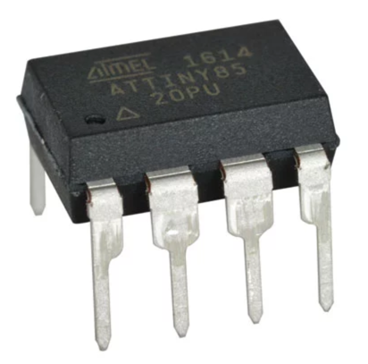
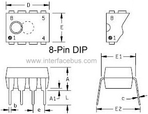

Digital Components¶
Read time: 26 minutes (6520 words)
As we start off on our adventure in building a computer in software, we need to look at some of the basic building blocks we will be exploring. We might as well take a look at the motivational computer I am going to use for this project, the Atmel ATtiny85 microcontroller:
Not much of a gadget, is it? But this tiny package houses a complete computer. It has a processor, memory, and several interesting other gadgets inside that make it very useful for building into some kind of product that needs some smarts. That product might be a digital thermostat, or maybe a microwave oven, or maybe even something inside of your car!
The package this processor lives in is called a Dual Inline Package`, or
Dip for short. This packaging was introduced in the early 1970’s and every
company that made digital parts used this design so systems could be
constructed with parts from many sources.
This particular one is called a dip-8, meaning it has eight “pins” where we
can attach wires to connect it up to other component parts in our system.
We will explore those “pins” and “wires” in our next lecture. For now, let’s concentrate on that “dip” thing.
Power to the Dip¶
This gadget is an electronic thing. That means that somehow we need to provide power to it so it can come to life. Without knowing anything else, I bet we are going to need to attach a battery of some sort to this thing, and i bet those “pins” on the sides have something to do with that.
The pins are numbered in a specified order. The package usually has a way to figure out where pin-1 is located. You march along that side numbering the other pins in order until you run out on that side. Then, you jump over to the other side, and continue numbering as you move up the opposite side in the reverse direction you moved originally. Down, then up!
Here is a diagram showing the dip-8 package in detail
In this diagram, there is a notch at the “top” of the package, and pin-1 is at the top-left. t Just for reference, the ATtiny85 power pins are pin-8 where you attach a 5-volt power source, and pin 4, where you attach the opposite side of that supply, which is called “ground” for reasons that make sense to electronics wizards We computer folks call these points the plus side or the minus side, and do not worry about those “volt” things. More on that later.
Signal Pins¶
We have accounted for two of the eight pins on this package. What are the other pins for?
Basically those pins are used to connect wires which carry electrical signals of some kind to the component. Now, you can think of electricity as something like water flowing through a pipe. When that electricity carries data in some form, we will call it a “signal”. So, we can think of a signal as a stream of water flowing through a wire “pipe” that we will connect to the component at a “pin”.
Make sense?
Water can only flow in one direction. (Well only one direction at any given time, but we will ignore that.) Our “signal” is a bunch of electricity either arriving at the component from somewhere, or leaving the component and heading off somewhere else.
We will call signals arriving at the component input signals, and signals
leaving the component “output” signals.
How do we tell whether a pin is an input signal point or an output signal point? It cannot be both things in our work. We cannot reall tell just by looking at the component. Instead, we need to read something called a “data-sheet’ for the component, and these sheets (actually books) are usually available as PDF files these days. Those data sheets will tell you far more about what is inside of this package than we need to worry about. We will look at data-sheets later.
Back to our ATtiny85!
We can interface our tiny processor to things in the world outside of that
package through the pins. We might connect a light-emmiting-diode to a pin
so the processor can blink that light to get the attention of some human. Or,
we might connect a pin to a switch of some kind and figure out if a human
flipped that switch or not. Thre are tons of interesting gadgets we could hook
up to this processor, which is part of what makes them fun to play with!
What is Inside?¶
The remaining issue is what is happening inside of this funny “dip” thing. Well, it is a secret for now.
All we are going to worry about for now is the simple fact that there are some input signals arriving at the package, and other output signals leaving the package. That means that inside of the package there must be some processing going on. The inputs are somehow transformed into the outputs. That is all the magic that goes on in this package. Simple! Well, maybe not so simple, as we will see.
Simulating Digital Components¶
The big challenge we face in this class is figuring out how to build a simulation of this package, and writing some software that performs the processing inside of that package. We could just write some code that takes the input signals and generates the output signals without even considering what is going on inside. We could, but that would not teach you much about computer architecture.
Instead, we will build several fairly simple components that model more basic parts you could purchase in packages very similar to this ATtiny85 part. We will connect those simple parts together with simulated wires and let simulated signals move over those wires from part to part.
This is not going to be hard, but it will be a kind of programming you have never seen before!
In our simulation, we will not have a lot of objects calling other objects and passing a bunch of parameters back and forth. The reason why might have struck you by now.
These parts have no idea where the wires go, or what the parts on the other ends of those wires are going to do with the signals. Each part lives in its own private world. As long as it sits there massaging inputs into outputs, that part is happy!
So what makes this mess of parts a computer?
That is what we want to learn. What kinds of parts do we really need, at the lowest level. What signals do we need to generate and process, and how to we piece all of this together so the resulting swirl of gadgets adds up to a computer?
Phew, sounds scary.
Never fear, this has been studied for decades, and we have the general system pretty well nailed down. We will see what we are dealing with after we explore those wires and pins a bit.
By the way, A component is going to be modeled as a simple C++ class, which has a set of inputs, a set of outputs, and a single method that will cause processing to go on when we ask for that action!
That should not be too hard, right?